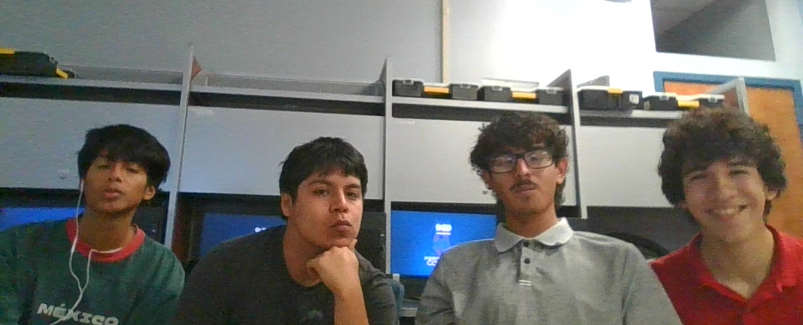

<!DOCTYPE html>
<html lang="en">
<head>

  <title style="text-align: center;>Energy Bites Dispenser</title>
    
  <link rel="stylesheet" href="style.css">
    
    
</head>
<body>

  <p>Design by Miguel L, Alexander T, Emiliano C, and Carlos Z</p>
  <p>Gladys Porter Early College High School</p>
  <p>Ms. Cortez</p>
    
  <h2 style="text-align: center;">Project Overview</h1>
  <p style="text-align: center;">Astronauts will spend 6–8 hours in their space suits while working on the Moon or Mars. Our project is to develop a Food Bite Dispenser inside the helmet that allows astronauts to get food bites, helping them stay energized during long activities.</h2>
    
</body>
</html>
